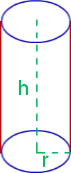

Cylinder Formula:
Cylinder is a solid structure that has two parallel faces and two circular bases. The radius of the circular base is the distance from the center of the base to the edge of the cylinder.

The two bases of the cylinder are perpendicular to the two faces.
The Cylinder Formula are used to calculate the surface area and volume of the
cylinder.
The Cylinder Formula is given below as,